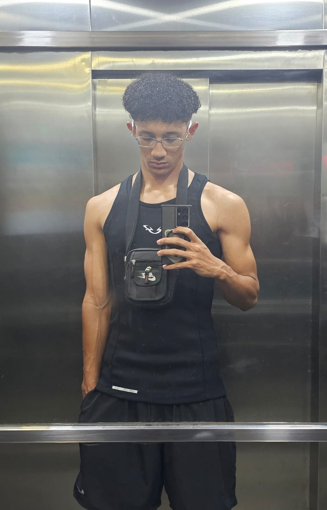

Olá, me chamo José Pedro
Sou um cara alegre, gente boa e gosto de manter um ambiente leve por onde passo. Adoro uma aventura, conhecer coisas novas e viver experiências diferentes. Também valorizo muito arrancar sorrisos das pessoas, porque acredito que boas energias fazem toda a diferença no dia a dia.

Formação Acadêmica
CESB - Centro Educacional Santa Bárbara (2012-2017)
Sesi Araçás - Vila Velha (2018-2023)
Téc. Biotecnologia - Senai (2021-2023)
Cursando Sistemas de Informação - UVV (2026)
Carreira Profissional
Sollo Brasil - Agente de atendimento do PicPay (2024/2025)
Autoglass - Agente de atendimento Youse (2025/2026)
- Atendimento ao cliente e resolução de dúvidas/problemas
- Registro de informações e atualização de dados no sistema
- Cumprimento de metas e garantia de um atendimento de qualidade
Estou em constante desenvolvimento para me tornar um programador de sucesso, sempre buscando aprender novas tecnologias, melhorar minhas habilidades e evoluir a cada dia. Tenho muita determinação e vontade de crescer na área, enfrentando desafios como oportunidades de aprendizado.
Habilidades
- Facilidade em aprender novas tecnologias
- Conhecimentos básicos em informática e programação
- Raciocínio lógico e resolução de problemas
- Interesse em acompanhar novidades da área de TI
- Adaptação rápida a novas ferramentas digitais
Vida Pessoal
Gosto muito de futebol e basquete, pela emoção e competitividade.
Também curto jogar League of Legends.
Meu estilo músical é trap, funk, pagode. Minha música favorita é Rv cauan - Chegou ao fim
Gosto de assistir vídeo sobre musculação
Time do coração é o VASCÃO

Minhas Matérias
| Matéria | Descrição |
|---|---|
| Construção de Software para Web | Estuda o desenvolvimento de aplicações e sites utilizando tecnologias web como HTML, CSS e JavaScript. |
| Design e Desenvolvimento de Banco de Dados I | Aborda a criação, modelagem e organização de bancos de dados para armazenar informações de forma eficiente. |
| Experiência e Interface com o Usuário | Foca na criação de interfaces intuitivas e agradáveis, melhorando a interação entre o usuário e o sistema. |
| Fundamentos de Tecnologia da Computação | Apresenta os conceitos básicos da computação, incluindo hardware, software e funcionamento dos sistemas. |
| Lógica para Computação | Desenvolve o raciocínio lógico necessário para resolver problemas e criar algoritmos. |
| Textos Científicos | Ensina a leitura, interpretação e produção de textos acadêmicos com linguagem formal e estruturada. |
Futuro profissional
Minha meta profissional é trabalhar na PicPay, uma das maiores fintechs do Brasil. Tenho grande interesse pela área de tecnologia e inovação, e vejo na empresa uma oportunidade de crescimento e desenvolvimento como programador. Busco me preparar cada vez mais, adquirindo conhecimento e experiência, para no futuro fazer parte da equipe e contribuir com soluções tecnológicas que impactem positivamente a vida das pessoas.